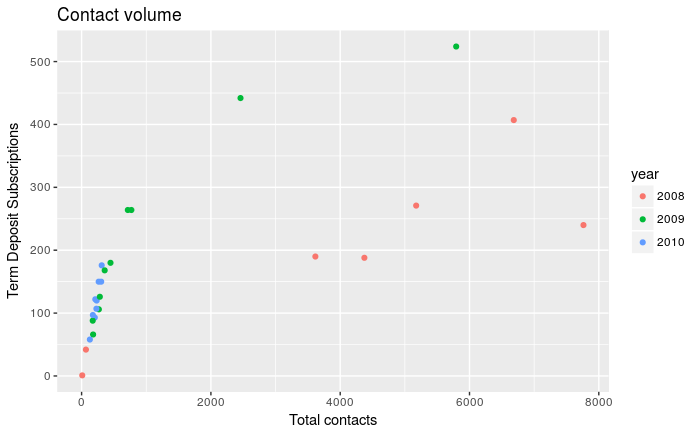

Database Queries With R
There are many ways to query data with R. This article shows you three of the most common ways:
- Using
DBI - Using
dplyrsyntax - Using R Notebooks
Background
Several recent package improvements make it easier for you to use databases with R. The query examples below demonstrate some of the capabilities of these R packages.
- DBI. The
DBIspecification has gone through many recent improvements. When working with databases, you should always use packages that areDBI-compliant. - dplyr &
dbplyr. Thedplyrpackage now has a generalized SQL backend for talking to databases, and the newdbplyrpackage translates R code into database-specific variants. As of this writing, SQL variants are supported for the following databases: Oracle, Microsoft SQL Server, PostgreSQL, Amazon Redshift, Apache Hive, and Apache Impala. More will follow over time. - odbc. The
odbcR package provides a standard way for you to connect to any database as long as you have an ODBC driver installed. TheodbcR package isDBI-compliant, and is recommended for ODBC connections.
RStudio also made recent improvements to its products so they work better with databases.
- RStudio IDE (v1.1 and newer). With the latest versions of the RStudio IDE, you can connect to, explore, and view data in a variety of databases. The IDE has a wizard for setting up new connections, and a tab for exploring established connections. These new features are extensible and will work with any R package that has a connections contract.
- RStudio Professional Drivers. If you are using RStudio Desktop Pro or other RStudio professional products, you can download RStudio Professional Drivers for no additional cost on the same machine where these products are installed. The examples below use the Oracle ODBC driver. If you are using open-source tools, you can bring your own driver or use community packages – many open-source drivers and community packages exist for connecting to a variety of databases.
Using databases with R is a broad subject and there is more work to be done. An earlier blog post discussed our vision.
Example: Query bank data in an Oracle database
In this example, we will query bank data in an Oracle database. We connect to the database by using the DBI and odbc packages. This specific connection requires a database driver and a data source name (DSN) that have both been configured by the system administrator. Your connection might use another method.
library(DBI)
library(dplyr)
library(dbplyr)
library(odbc)
con <- dbConnect(odbc::odbc(), "Oracle DB")1. Query using DBI
You can query your data with DBI by using the dbGetQuery() function. Simply paste your SQL code into the R function as a quoted string. This method is sometimes referred to as pass through SQL code, and is probably the simplest way to query your data. Care should be used to escape your quotes as needed. For example, 'yes' is written as \'yes\'.
dbGetQuery(con,'
select "month_idx", "year", "month",
sum(case when "term_deposit" = \'yes\' then 1.0 else 0.0 end) as subscribe,
count(*) as total
from "bank"
group by "month_idx", "year", "month"
')2. Query using dplyr syntax
You can write your code in dplyr syntax, and dplyr will translate your code into SQL. There are several benefits to writing queries in dplyr syntax: you can keep the same consistent language both for R objects and database tables, no knowledge of SQL or the specific SQL variant is required, and you can take advantage of the fact that dplyr uses lazy evaluation. dplyr syntax is easy to read, but you can always inspect the SQL translation with the show_query() function.
q1 <- tbl(con, "bank") %>%
group_by(month_idx, year, month) %>%
summarise(
subscribe = sum(ifelse(term_deposit == "yes", 1, 0)),
total = n())
show_query(q1)<SQL>
SELECT "month_idx", "year", "month", SUM(CASE WHEN ("term_deposit" = 'yes') THEN (1.0) ELSE (0.0) END) AS "subscribe", COUNT(*) AS "total"
FROM ("bank")
GROUP BY "month_idx", "year", "month"3. Query using an R Notebooks
Did you know that you can run SQL code in an R Notebook code chunk? To use SQL, open an R Notebook in the RStudio IDE under the File > New File menu. Start a new code chunk with {sql}, and specify your connection with the connection=con code chunk option. If you want to send the query output to an R dataframe, use output.var = "mydataframe" in the code chunk options. When you specify output.var, you will be able to use the output in subsequent R code chunks. In this example, we use the output in ggplot2.
```{sql, connection=con, output.var = "mydataframe"}
SELECT "month_idx", "year", "month", SUM(CASE WHEN ("term_deposit" = 'yes') THEN (1.0) ELSE (0.0) END) AS "subscribe",
COUNT(*) AS "total"
FROM ("bank")
GROUP BY "month_idx", "year", "month"
``````{r}
library(ggplot2)
ggplot(mydataframe, aes(total, subscribe, color = year)) +
geom_point() +
xlab("Total contacts") +
ylab("Term Deposit Subscriptions") +
ggtitle("Contact volume")
```
The benefits to using SQL in a code chunk are that you can paste your SQL code without any modification. For example, you do not have to escape quotes. If you are using the proverbial spaghetti code that is hundreds of lines long, then a SQL code chunk might be a good option. Another benefit is that the SQL code in a code chunk is highlighted, making it very easy to read. For more information on SQL engines, see this page on knitr language engines.
Summary
There is no single best way to query data with R. You have many methods to chose from, and each has its advantages. Here are some of the advantages using the methods described in this article.
| Method | Advantages |
|---|---|
|
|
|
|
|
|
You can download the R Notebook for these examples here.